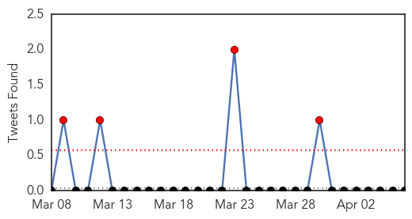
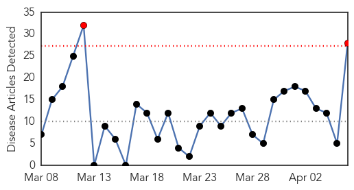
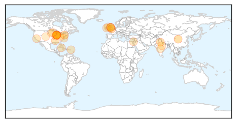
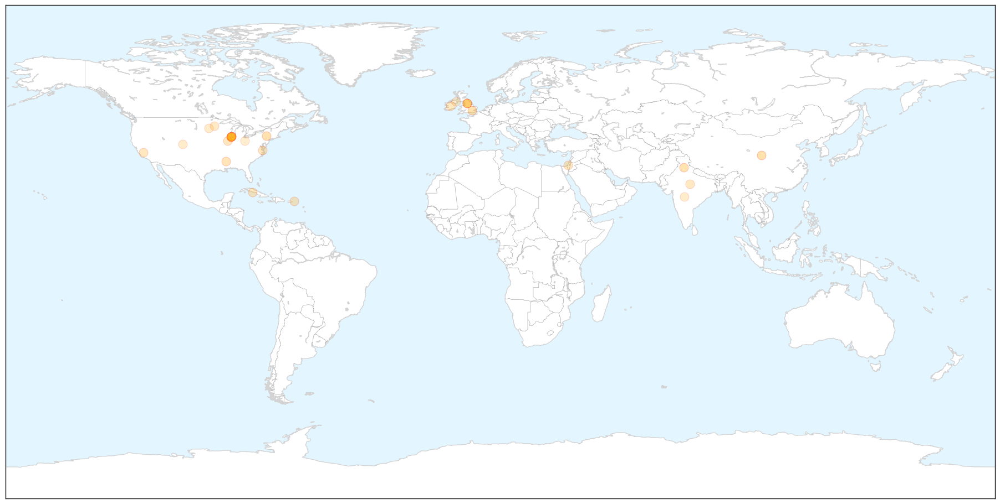
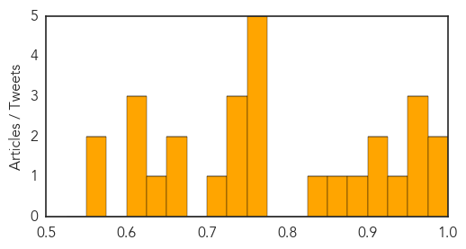

Measles
30-Day Web Trend
0 alerts, 0 warnings

30-Day Twitter Trend
4 alerts, 0 warnings

Article Locations

Article Confidences

Top Articles:
- 0.882
- Measles outbreak prompts hundreds on Peninsula to take their best shot -- Port Angeles Port Townsend Sequim Forks Jefferson County Clallam County Olympic Peninsula Daily NEWS
- 0.862
- State Health Department helps protect the public
- 0.862
- WHO helps North Korea battle measles outbreak
- 0.564
- WHO targets about 35, 000 children for vaccination
Top Tweets:
-
No tweets found for Apr 06, 2015
Influenza
30-Day Web Trend
2 alerts, 0 warnings

30-Day Twitter Trend
0 alerts, 0 warnings

Article Locations

X

Article Confidences
Top Articles:
- 0.986
- Swine Flu takes five more lives in Jordan
- 0.986
- Near-epidemic canine flu puzzles Chicago vets
- 0.965
- Thousands Could Die in Superbug Outbreak
- 0.960
- Thousands of people could die from new superbugs
- 0.958
- Many Deaths Predicted from Antibiotic-Resistant Bugs : Discovery News
- 0.942
- Dog Flu Epidemic Kills 5, Sickens Hundreds Of Animals In Chicago Area
- 0.916
- Birds flew with flu
- 0.908
- Chicago's canine flu outbreak "almost an epidemic," vets say
- 0.881
- Canine Flu Outbreak In Chicago Kills Five Dogs, Shuts Kennels
- 0.859
- Officials warn about canine flu outbreak after 5 dogs die in Chicago area
- 0.838
- Producers urged to take all precautions against avian flu
- 0.751
- April 5, 2015 Archives
- 0.751
- April 5, 2015 Archives
- 0.751
- April 5, 2015 Archives
- 0.751
- April 5, 2015 Archives
- 0.751
- April 5, 2015 Archives
- 0.744
- Vet: Dog Influenza Is “Near Epidemic”
- 0.740
- New superbugs 'could kill 80,000'
- 0.730
- New superbugs could kill 80,000, Government report warns
- 0.702
- British superbug outbreak ‘could kill 80,000’
- 0.671
- New breed of superbugs which are resistant to antibiotics could kill 80,000 Britons
- 0.670
- Bird flu hits two more MN turkey farms
- 0.628
- UK: 80,000 people risk death from drug-resistant outbreaks says Cabinet Office report
- 0.623
- Avian influenza spreads across West in backyard and commercial flocks
- 0.617
- New superbugs 'could kill 80,000'
- 0.609
- H5N2 hits two more Minnesota turkey farms
- 0.566
- Poultry experts urge prevention to keep bird-flu out of Ohio
- 0.560
- Outbreak of drug-resistant infection could kill 80,000 in UK, report warns
Top Tweets:
-
No tweets found for Apr 06, 2015